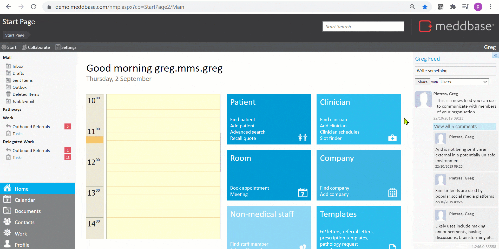

In order to log into and use Meddbase, a person needs a User Account created and a License assigned.
Once a new 'User' is added, they can be assigned to various 'Roles', also referred to as 'Role Groups'. These Role Groups are useful to group users together that require the same permissions or require notifications for the same actions.
In Meddbase there is a set of built-in Role Groups, linked to various workflows, as well as the ability to create custom Role Groups.
This article explains
To view the built-in Role Groups:-
1. From the Start Page navigate to Admin
2. Click the User Management tile
On the right-hand pane, you will find a list of built-in (pre-configured) Role Groups. Please refer to the table below explaining the purpose for each Role Group.

The below table outlines the function of each Role Group and the workflows in which they are involved.
The functionality described in the below table involving the use of Work Items relies on configuring the respective work items under Admin > Work, as well as other settings.
| Role Group | Description |
|---|---|
| Appointment Reminder Admin | Members of this group will receive notifications whenever appointment reminders are to be sent to patients. This can also result in an Appointment Reminder work item(s) arriving in the Delegated Work section of the Start Page for these members. Please note - This requires additional configuration for Appointment Reminders in Task Checker via Admin > Configuration > Task Checker. |
| Debt Chase Admin | Members of this group will receive notifications whenever debt remains outstanding after a month. Furthermore, Outstanding Debt work item(s) will appear in the Delegated Work section of the Start Page for these members. |
| Incoming Referrals Administrator | Members of this group will receive notifications when a new electronic referral is made to the clinic. The referral will also arrive as an Incoming Referral work item in their Work section of the Start Page. |
| Lab Result Admin | Members of this group will always receive and see all active (not archived) Pathology Result work items in their Delegated Work section of the Start Page, regardless of any setting. They can also view the work history for Pathology Results in the Admin > Work > Chamber Work History section. |
| Lab Result Reviewer | Members of this group can receive Pathology Result work items in their Work section of the Start Page. Please note - This requires additional configuration of the Pathology Result work item in Admin > Work > Pathology Results. To explicitly assign incoming lab results to this group, the Assign Reviewer Automatically option needs to be set to Role. |
| Outbound Portal Referral Administrator | Members of this group will receive an Outbound Referral work item in their Work section of the Start Page when an Occupational Health referral is made from Meddbase, either internally to Triage or to another Meddbase chamber. Please note - A more common scenario would involve a manager referring an employee for Occupational Health via the Referral Portal. However, occasionally managers may contact their Occupational Health Provider directly and ask for a referral to be made, in which case this Role Group would be utilised. |
| Outbound Referrals Administrator | Members of this group will receive an Outbound Referrals work item in their Work section of the Start Page (Click here for more details on Outbound Referrals). |
| PACS Inbox Administrator | Members of this group will receive notifications whenever a new PACS item is generated. The PACS item will also arrive in the PACS Inbox in the Work section of the Start Page for these members. |
| Patient Record Email Access | Members of this group have access to all emails attached to a patient's account within Meddbase. |
| Recall Reminder Admin | Members of this group will receive a Recall Reminder work item in their Work section of the Start Page. The item can be then assigned to another user or group. |
| Repeat Prescription Reviewers | Members of this group will receive notifications when a repeat prescription is due for review. |
| Results Reminder Admin | Members of this group will receive 'Result Reminder' tasks (work item) in their Work section of the Start Page. Please note - These tasks are driven by the 'Expected turn-around time from starting the test to receiving the results (in days)' setting available for each Test in Admin > Service Management. These reminders are created automatically by the Meddbase task checker an appropriate amount of time after the start date of an appointment where a provided test has an expected turnaround set. |
| System Administrators | Members of this group are able to access the whole system and receive a wide range of notifications. |
| Task Admin | Members of this group are alerted whenever a new task is created. They can also view the work history for Tasks in the Admin > Work > Chamber Work History section. |
| Users | All users of the system become members of this Role Group by default upon being created. Please note - It is not recommended that an existing user is ever removed from this Role Group. This would hinder their ability to use the system. In relation to granting security permissions e.g. ability to interact with patient data or deleting documents etc., this Role Group should be treated as the base group with the minimum amount of permissions. Subsequent permissions should be granted to the above groups accordingly and members of these groups will inherit the permissions on top of the permissions granted to the Users group. |
Apart from the built-in Role Groups, Meddbase offers the ability to create new Roles.
For example where there is the need to group users in certain roles together, e.g. Nurses, Doctors or Front of House Staff etc. These 'custom' Role Groups and their members will not by default be involved in specific workflows or receive notifications. However these 'custom' groups incl. all members can be added to other groups, as described earlier.
See Creating new Role groups for step-by-step information on how this is done.
Meddbase allows adding entire Role Groups as members of subsequent groups. Furthermore, a single user or group can be a member of multiple Role Groups simultaneously. This needs to be done carefully so that it does not create conflicts (permission denied vs granted) in relation to the security permissions of both groups.
Consider the below examples:
1. Group A - has been granted the ability to delete documents
2. Group B - has the ability to delete documents explicitly denied
3. Group A has been added as a member of Group B
4. Result - Group A can no longer delete documents
1. Group A - has the ability to delete documents neither 'granted' nor 'denied' (neither is ticked), which means Meddbase will treat that permission as denied (although not explicitly)
2. Group B - has the ability to delete documents granted
3 Group A has been added as a member of Group B
4. Result - Group A inherits the ability to delete documents from Group B (the opposite would be true if Group B had the permission explicitly denied in point 2.)
With your understanding of Role groups, you may also be interested in the following articles.
1. Adding users
2. Adding a user to Role groups